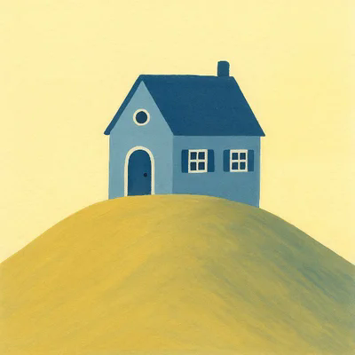
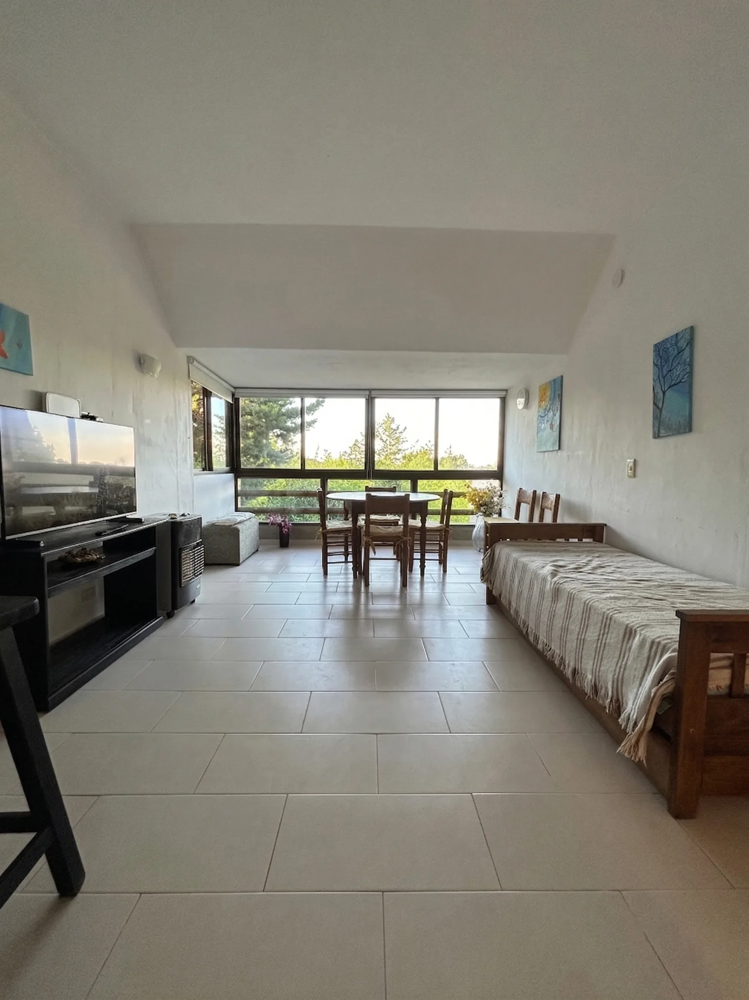

Descanso
Dormitorio independiente y camas adicionales en el living para alojar cómodamente hasta cuatro personas.

Casita de la Colina Ver en Airbnb
Pinamar Centro · Buenos Aires
Casita de la Colina alquiler temporario en Pinamar Centro para hasta 5 huéspedes. Cerca del mar, con parque, parrilla, internet y todo lo necesario para disfrutar Pinamar en temporada de verano o cualquier época del año!
Casita de la Colina
En Martín Pescador 489, Pinamar, la Casita de la Colina ofrece un espacio cómodo para parejas, familias o grupos pequeños que buscan tranquilidad y contacto con el entorno.
Cuenta con dos ambientes, cocina equipada, baño, living comedor con grandes ventanales y un parque trasero con parrilla. La capacidad habitual es de 4 huéspedes, con posibilidad de un quinto si trae su propio colchón.
Dormitorio independiente y camas adicionales en el living para alojar cómodamente hasta cuatro personas.
Entorno arbolado y parque trasero propio para disfrutar del aire libre y la tranquilidad de Pinamar.
Wi‑Fi de alta velocidad, cocina completa, estacionamiento propio y todo lo necesario para una estadía práctica.
Todo a mano
Lo esencial para instalarte y sentirte cómodo desde el primer día.
Conocé la casita
Reservas
Consultá las fechas disponibles y la tarifa correspondiente para tu estadía.
Consultar disponibilidadUbicación
La propiedad se encuentra en Martín Pescador 489, en un entorno residencial y arbolado de Pinamar.
Abrir en Google MapsPreguntas frecuentes
Información rápida sobre capacidad, ubicación, comodidades y disponibilidad de Casita de la Colina.
Casita de la Colina tiene capacidad habitual para hasta 4 huéspedes. También existe la posibilidad de alojar a un quinto huésped si trae su propio colchón.
La casa se encuentra en Martín Pescador 489, Pinamar, Buenos Aires, en un entorno residencial y arbolado.
Sí. Cuenta con parque trasero privado y parrilla para disfrutar comidas y momentos al aire libre.
Sí. Casita de la Colina ofrece alquiler temporario en Pinamar durante distintas épocas del año, sujeto a disponibilidad.
La casa dispone de Wi-Fi de alta velocidad, cocina equipada, estacionamiento propio, parque, parrilla, vajilla y batería de cocina.
Podés consultar disponibilidad por WhatsApp o realizar la reserva directamente a través de Airbnb desde los botones de esta página.
¿Querés venir?
Podés reservar directamente por Airbnb o escribirnos por WhatsApp para hacer una consulta.